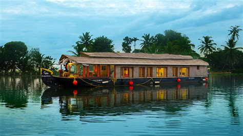

Athirappally Waterfalls is situated in the Thrissur district of Kerala, approximately 70 kilometers from the city of Kochi. It lies near the border of the Sholayar Forest Range and is part of the Chalakudy River, which originates in the Anamudi Mountains. The waterfall boasts a height of about 80 feet (24 meters) and a width spanning approximately 330 feet (100 meters), making it one of the largest and most impressive waterfalls in India.
Perched atop dramatic cliffs that overlook the azure waters of the Arabian Sea, Varkala is a coastal gem that mesmerizes visitors with its raw beauty and spiritual aura. As you stand atop the cliffs, the panoramic vistas open up before your eyes: endless stretches of golden sand, crashing waves, and the humming of seagulls soaring overhead.
Drench yourself in the rich aroma of spices as you set foot in Kozhikode, where history, culture, and culinary delights intertwine. Follow the irresistible scent of cardamom, cinnamon, and black pepper as you explore the bustling spice markets that have been the heartbeat of this lively city for centuries. Visit the historic landmarks, such as the grand Tali Temple and the iconic Kozhikode Beach, where the crashing waves offer a sense of calm amidst the bustling cityscape.
The main attraction for Hindus who visit Trivandrum is the 16th-century Padmanabhaswamy temple, dedicated to Lord Vishnu and built by rulers of the kingdom of Travancore. A great deal of wealth has been hidden in the temple, making it the richest temple in the world. Some of the treasures were recently unearthed but the largest vault remains unopened. Unfortunately, if you're not Hindu, you won't be allowed to go inside the temple unless you declare you believe in Hinduism. Trivandrum also has some interesting museums and galleries, housed in classical heritage
Spend some quality time amidst nature with your beloved partner and make your honeymoon unforgettable for the lifetime. Kuttanad is a beautiful honeymoon destination in Kerala where couples can enjoy romantic houseboat ride with spectacular landscapes.
This fort is the landmark of the city. Palakkad fort rising above a tiny hill situated at the end of the city welcomes all visitors to this marvellous place. This fort is historically important which tells us about the tales of many heroes of the past. This well maintained fort is the best place to spend time in breezy evening. With its architectural beauty and historical importance it draws the attraction of all visitors. Kotta Maithanam, west of the fort is very famous for being the place where Tipu’s cavalry camped. Nearby the fort there is a children’s park and open air stadium.
Kochi is a place that’s like a mix of old and new things, kind of like history and new stuff coming together in a really cool way. People also call it the “Queen of Arabian Sea.” It’s so interesting that it’s ranked as the seventh best city in Lonely Planet’s list of top 10 cities in the world to visit. One of the oldest European churches in India is there, called Saint Francis Church. Even Vasco Da Gama’s remains are kept there. Also, the city won a special award from the UN for having an airport that works with solar energy. It’s a really neat place!
Dhoni is a tiny hamlet near Palakkad and is best known for its natural wealth. Paying a visit to these falls is truly one of the magical things to do in Palakkad. The Dhoni waterfalls and the forest combined together offer a reprieve from the heat and humidity of Palakkad. It is one of the best places to visit in Palakkad for a day trip. The forest is a part of western ghats and is ideal for bathing. This is one of the most beautiful waterfalls in Palakkad.
Just behind the Malampuzha Dam is yet another beautiful attraction called Kava Viewpoint. One of the least tapped places in Palakkad that is nestled amidst the rich Western Ghats. Kava Viewpoint is a quiet getaway and it springs back to life during the month of the monsoon. From the Kava Viewpoint, visitors can cherish the view of the lush green neighboring mountains. The lush, picturesque scenery and desire to get beautiful selfie shots are two of the reasons to plan a trip here again and again. Locals call Kava ‘the womb of the raincloud’ as the first rain cloud forms here. The views from the top are beautiful – the green mountains stretch on forever in colors of emerald and jade.
The Malampuzha Dam has become one of the best tourist attractions in Palakkad. Opened in 1955, this beautiful park and dam have manicured lawns and still waters perfect for a visit during the monsoons. It is the only one among Palakkad tourist spots to have a functioning ropeway.
Thekkady is the tourist destination in Kerala where you can view Elephants, Kathakali and Martial Arts. Thekkady is one of the best forest tourist places in Kerala and home to wildlife like elephants, bison, deer, Nilgiri langurs and tigers. Cruise along the length of the lake in a tourist boat while sighting animals, birds and reptiles
About 60 KM from Palakkad lie the Nelliyampathy Hills, one of the far-off places to visit near Palakkad whose cloud-covered mountains are a delight! The well-laid road and beautiful scenery along the way including the Pothundy Dam and Palakkad Gap make it one of the best tourist places in Kerala for a one day trip.
visit Nelliyampathy Hills palakkadJatayupara Earth's Center is an ambitious new attraction in Kerala. It opened in late 2016, in Chadayamangalam village in Kerala's Kollam district, about an hour north of Trivandrum. The park is spread over an astonishing 65 acres and is themed on the Hindu epic The Ramayan. It's dominated by a 200-foot-long landmark sculpture of Jatayu, the mythical vulture that's believed to have been killed on the rocky hilltop while trying to rescue Sita from Ravan. Notably, the sculpture is considered to be the largest of its kind in the world. The park has more than 20 adventure activities, a 6D theater that shows the battle between Jatayu and Ravan, a virtual reality museum, an Ayurvedic healing cave, and cable car (aerial tramway) to transport visitors up.
There is the whole of Kerala in one side, and then there is this heavenly tourist destination called Alappuzha or Alleppey! Esteemed as the ‘Backwater Capital of India’ or the ‘Venice of the East’, Alleppey is known for its silent backwaters and bountiful beauty!
Adorned by the magical charm of the Vembanad Lake, Kumarakom is another beguiling backwater destination in God’s Own Country. Located within the proximity to Kottayam city, this is the place where even being lazy is also one of the best things you can do during your Kerala holidays. Adorned by the charm of the emerald Vembanad Lake, the evergreen coconut grooves, breezy rice fields, and lot more, Kumarakom is popular among all the types of visitors. However, backwater cruise and houseboat stays are the most popular thing to do in this beautiful tourist destination.
Munnar is among the most famous tourist places in Kerala and tops the list when it comes to must visit places in Kerala. It’s like a magical paradise tucked away in the hills called the Western Ghats. Imagine being high up at 1,532 meters above the sea, surrounded by lush green hills. It’s like a beautiful painting came to life! The air is crisp and fragrant, carrying the aroma of freshly brewed tea leaves.